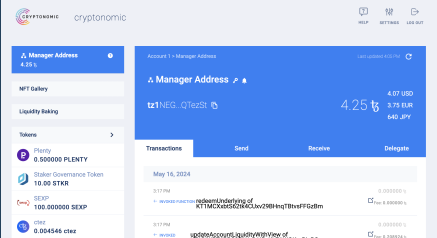

Galleon
Built in 2018, Galleon was the first audited wallet software for the Tezos blockchain platform. It was preeminent in the ecosystem for multiple years and played a crucial part in the launch and subsequent usage of Tezos.